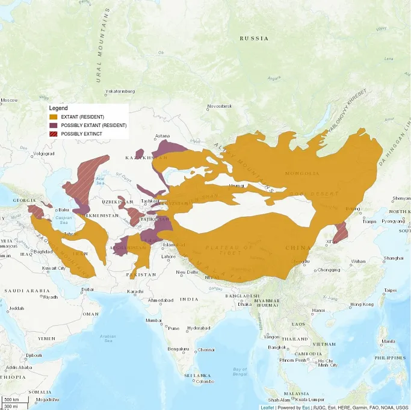

According to Wikipedia: "The Pallas's cat's range extends from the Caucasus eastward to Central Asia, Mongolia and adjacent parts of Dzungaria and the Tibetan Plateau. It inhabits montane shrublands and grasslands, rocky outcrops, scree slopes and ravines in areas, where the continuous snow cover is below 15–20 cm." 
Highly specialized predator or small mammals, which it stalks or ambush near the exits of burrows. It is known to eat squirrels, shrews, pikas, choughs, gerbils, voles, passerine birds, beetles and grasshoppers.
?? Replace this with a few lines on the animal's behaviour.